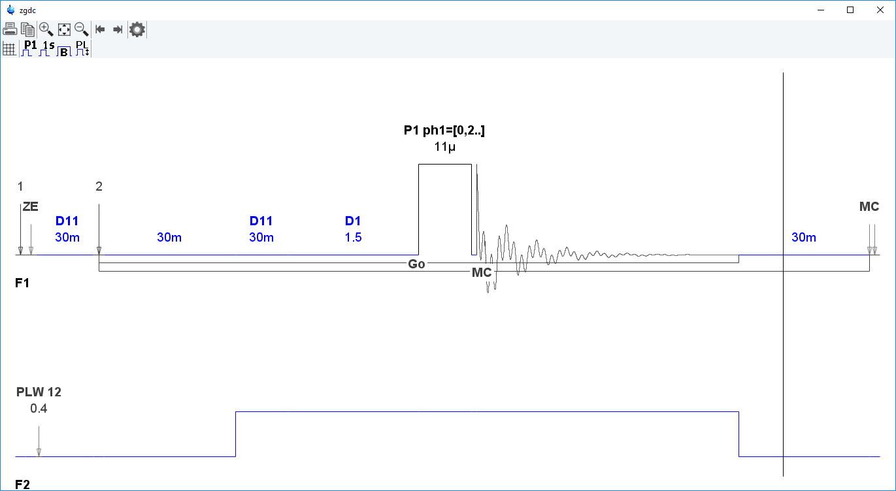

edcpul, edpul
NAME
edcpul - Edit the current pulse program.
edpul – Edit any pulse program.
SYNTAX
edcpul [<name>]
edpul [<name>]
DESCRIPTION
The command edcpul opens the TopSpin editor showing the current pulse program (see the next figure). The current pulse program is defined as the pulse program of the foreground dataset as defined by the acquisition parameter PULPROG.
Bruker pulse programs are opened in view mode which means they cannot be modified. The dialog File menu offers you the following functions:
- Open
- This will open the edpul dialog where you can open any available pulse program. The current pulse program is automatically highlighted.

edpul: list of pulse programs - Save as...
- Allows you to save the pulse program under a different name
- This will print the pulse program
The button opens a graphical presentation of the pulse program:

All parameters as set in the current dataset are provided in the graphical display.
The button writes the pulse program name to the acquisition parameters.
User defined pulse programs are opened in edit mode and can be modified. The dialog File menu offers you the following extra functions:
- New
- Allows you to open a new pulse program.
- Save
- Allows you to save the pulse program under the same name
Besides the File menu, the dialog offers the edit and search menu with common edit/search functions.
INPUT PARAMETERS
To be set with eda or by typing pulprog :
- PULPROG - the current pulse program (input of edcpul)
INPUT FILES
- <tshome>/exp/stan/nmr/lists/pp
- Bruker and user defined pulse programs
- <dir>/data/<user>/nmr/<name>/<expno>/
- acqu - acquisition parameters
OUTPUT FILES
- <dir>/data/<user>/nmr/<name>/<expno>/
- acqu - acquisition parameters (output of edcpul <name>)
SEE ALSO
edgp, (edcpd)